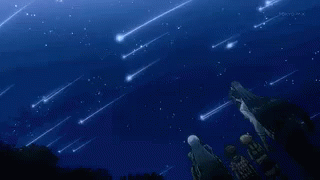
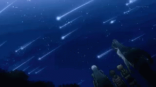
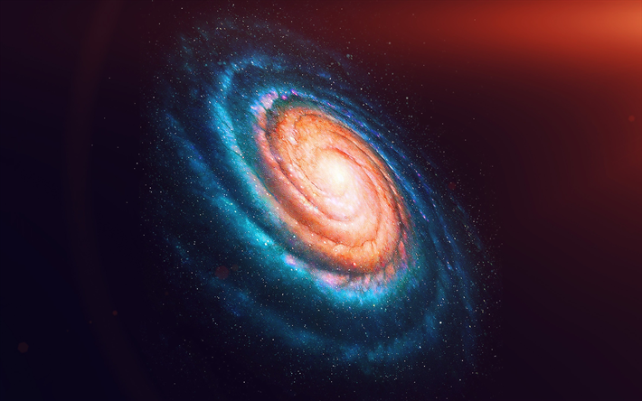
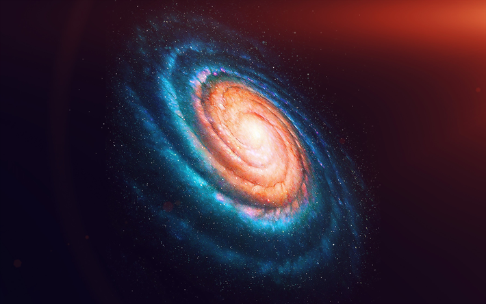

La astronomía es como un libro abierto que nos permite conocer más sobre el cosmos que nos rodea.
¿Qué es la astronomía? Astronomía, cuya raíz viene del latín y el griego ‘astron’ (estrellas) y ‘nomia’ (normal o regla), es la rama de la ciencia que se encarga de estudiar las estrellas, satélites, planetas… Y en definitiva todos los cuerpos que existen en el universo y la forma en la que se relacionan entre sí.
Los planetas son objetos celestes que orbitan alrededor de una estrella, como nuestro Sol. En nuestro sistema solar, tenemos ocho planetas, incluyendo la Tierra, que es nuestro hogar. Cada planeta tiene características únicas y fascinantes. Más información sobre los planetas...
Las estrellas son gigantes bolas de gas caliente que generan luz y calor a través de la fusión nuclear. El Sol es una estrella en nuestro sistema solar, pero hay billones de estrellas en el universo, cada una con su propia historia. Descubre más sobre las estrellas...
 

Las galaxias son vastas agrupaciones de estrellas, planetas y otros objetos cósmicos. La Vía Láctea es nuestra galaxia, pero hay innumerables galaxias en el universo, cada una con su propia forma y características únicas. Explora el mundo de las galaxias...
 

Mantente al día con las últimas noticias y descubrimientos en el campo de la astronomía. Desde nuevos exoplanetas hasta eventos cósmicos emocionantes, siempre hay algo emocionante que aprender en el mundo de la astronomía.